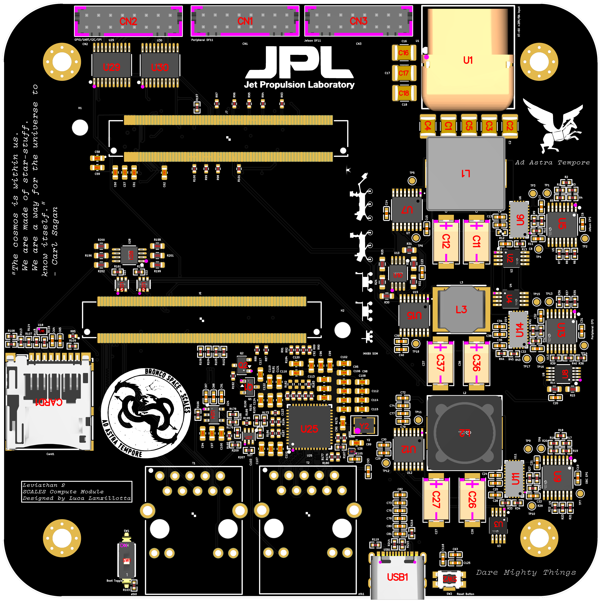
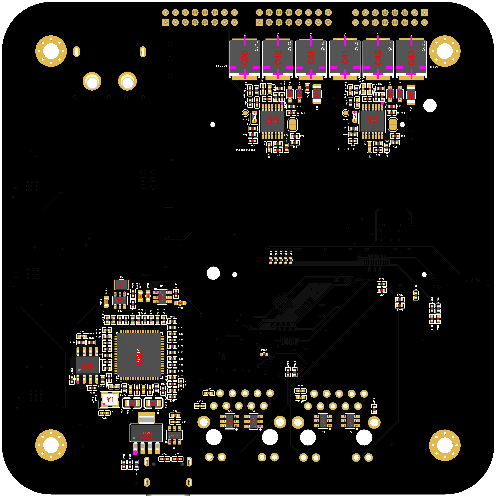

SCALES Compute Module
By Luca Lanzillotta
Usage Guide
Using the Leviathan 2 board with the i.MX8X requires building a Linux system image using the SCALES BSP. This BSP includes a pre-installed, startup-enabled ImxDeployment from the fprime-scales-ref project.
Key repositories:
- BroncoSpace-Lab/fprime-scales-ref
F Prime reference deployment used by the SCALES Compute Module and related subsystems. - BroncoSpace-Lab/scales-firmware
Firmware source and supporting software for the SCALES system. - BroncoSpace-Lab/meta-scales-leviathan
Yocto meta-layer for building the SCALES imx8x Linux BSP.
1. Set Up Linux for the SCALES Compute Module
- Follow the Setup and Build the BSP guide.
- If you choose to, you can build your own fprime-scales-ref/ImxDeployment.
- Flash the built image to an SD card.
Note
If the watchdog solder pads are soldered, both the i.MX8X and the Jetson must have preinstalled reference deployments. The Jetson must also have its designated GPIO wired, or it will be power-cycled approximately every 32 seconds by the watchdog circuitry.
2. Boot the SCALES Compute Module
- Set the boot toggle switch to the SD Card position.
- Insert the SD card into the board.
- Apply power through the XT-60 connector.
- Wait for the system to boot automatically.
3. Log in to the SCALES Compute Module
The SCALES Compute Module is accessible over SSH through Ethernet or over a USB-C serial connection.
USB-C Serial Connection
- Plug in a USB-C cable from your host machine to the SCALES Compute Module.
- Download Tabby.
- Open Tabby and select New terminal.
- Navigate to Profiles & Connections in the top toolbar.
- Search for
ttyUSB0in the COM ports. - Select
ttyUSB0and set the baud rate to115200. - Default user is
root, default password isroot
RJ45 Ethernet SSH Connection
Available IP addresses on the SCALES Compute Module:
- Plug in a CAT5E or higher Ethernet cable from your host machine to the SCALES Peripheral Board.
- Connect the SCALES Compute Module to the SCALES Peripheral Board.
- Check which SCALES Compute Module Ethernet port is connected. The BSP preconfigures
10.3.2.10foreth0and10.3.2.11foreth1, and the ports are labeled on the PCB. - On your host machine, open PowerShell on Windows or a terminal on Unix systems.
- SSH into the board using the address for the connected port:
or:
Hardware Introduction
Leviathan 2 is the merged implementation of the SCALES i.MX8X Carrier Board and the SCALES EPS. It consolidates two previously separate development boards into a single design:
- A revised version of the Leviathan 1A board which served as the first merged implementation of the Mariner 1-C board and the Viking 1-C board.
This merged board is designated Leviathan 2. This merged board is designated Leviathan 2.
The latest design revisions, SPICE simulation models, and engineering calculations are available in the scales-hardware repository.
Hardware Overview
The Leviathan 2 board contains two primary subsystems: The Leviathan 2 board contains two primary subsystems:
- i.MX8X carrier board circuitry
- Power system circuitry for the full SCALES platform
Board Images
Front

Back

i.MX8X Carrier Board Implementation
The i.MX8X carrier board section is a reduced version of the development platform provided by Phytec and includes the interfaces listed below.
Each serial and peripheral interface is explicitly defined in the custom BSP, which provides the Linux kernel with the hardware description for this carrier board. Refer to the Leviathan 2 meta-layer in the BSP for complete details on pin configuration and usage.
For convenience, the exposed signal labels are listed below and may be accessed directly from the operating system.
All GPIO, SPI, I2C, and UART signals made available to the end user are routed through the outermost DF11 connector. Refer to the scales-hardware schematic and PCB files for additional implementation details.
Component Selection
Most of these components are derived directly from the Phytec PCM-942 development board schematic. Although alternative components with similar specifications may also be suitable, this design stays as close as possible to the reference implementation for the features included here.
- SoM Connectors
- DF11 Connectors
- Power Distribution Switch
- MicroSD Card Connector
- FTDI Linear Voltage Regulator
- FTDI Controller
- USB-C Connector
- SPI EEPROM
- FTDI Crystal Oscillator
- UART Level Shifters
- ESD Surge Protector
- Ethernet PHY-to-MAC 10/100 Base-T Translator
- Ethernet Crystal Oscillator
- Low-Voltage AND Gate
- Ethernet TVS Diodes
- RJ45 Connector with Integrated Magnetics
- Linear Regulator
- Linear Regulator
- P-Channel MOSFET
- N-Channel MOSFET
- Switch
- Button
Ethernet
- 2 x 1 Gb Ethernet ports are available
- Ethernet support is configured on the SoM through the BSP
- The supporting circuitry is directly ported from the i.MX8X development board
- Both external RJ45 ports use Wurth Elektronik
7499111121Aintegrated-magnetics connectors, which keep the Ethernet magnetics inside the connector body and reduce the amount of discrete magnetics circuitry required on the carrier board - The Ethernet routing is implemented on the 6-layer KiCad stackup:
F.Cu,In1.Cu,In2.Cu,In3.Cu,In4.Cu, andB.Cu - Ethernet differential pairs are routed for controlled impedance and length/skew tuned in the PCB layout. The KiCad file records tuned Ethernet routes using
0.124 mmtrack width with approximately0.18 mmto0.2032 mmpair gaps, with matching targets used across the Gigabit copper pairs and related Ethernet timing groups - Two Ethernet configurations are available on the SoM:
- One is preconfigured on the SoM using an onboard RGMII translator
- The second is implemented on this carrier board
USB-to-UART (USB-C)
- UART0 on the SoM is reserved for UART-to-FTDI usage
- The default BSP configures UART0 for debugging
- This interface allows direct transmission and reception of commands and telemetry over UART
- The onboard chip provides UART-to-FTDI translation so the board can interface with a host machine over a serial port
- This design and supporting chip originate from the Phytec reference implementation
MicroSD Card
- The SD card / Wi-Fi muxes have been removed
- This allows default SD card boot configuration and use
3.3 V GPIO
Five 3.3 V GPIO pins are made available through a TXS0108 PGOOD buffer.
Exposed GPIOs:
GPIO1_17GPIO1_29GPIO1_30GPIO1_26GPIO1_25
Reserved internal GPIOs:
GPIO1_18- Peripheral power sequencingGPIO1_19- Jetson power sequencingGPIO1_20- OBC watchdog petting
SPI
SPI is available through a TXS0108 PGOOD buffer.
Exposed SPI signals:
SPI2_CS1SPI2_CS0SPI2_SCKSPI2_SDISPI2_SDO
I2C
Two I2C buses are available on the carrier board.
Reserved I2C Bus
I2C0 is reserved internally for subsystem monitoring and regulator telemetry.
Reserved I2C signals:
I2C0_SDAI2C0_SCL
Devices on I2C0:
- INA260, OBC subsystem:
0x41(01000001) - INA260, Peripheral subsystem:
0x45(01000101) - INA260, Jetson subsystem:
0x40(01000000) - MCP9808, OBC subsystem:
0x19(00011001) - MCP9808, Peripheral subsystem:
0x1A(00011010) - MCP9808, Jetson subsystem:
0x1B(00011011)
Exposed I2C Bus
The user-accessible I2C bus is exposed as:
I2C3_USR_SDAI2C3_USR_SCL
UART
UART is available in two ways:
- Through the FTDI controller over USB
- Through TX and RX pins exposed on the outermost DF11 connector
These signals use 3.3 V logic levels.
Exposed UART signals:
UART2_RXUART2_TX
Boot Partition Toggler
If use of the 32 GB eMMC on the SoM is desired, a switch is provided to toggle between boot modes.
- Boot selection is controlled by
BOOTMODE[3:0] 0010boots from eMMC0011boots from SD card
Since all other boot configurations have been removed, only the final bit needs to be switched using the onboard selector.
SCALES EPS Implementation
The Leviathan 2 version of the SCALES EPS powers three subsystems: the OBC, the Jetson, and the Peripheral subsystem. The OBC and Jetson both include watchdog protection, while the Peripheral subsystem does not. The Jetson and Peripheral subsystems are designed to be power-sequenced by the OBC within the fprime-scales-ref deployment.
Power Requirements
The system accepts a nominal +28 V input with a maximum current of 8 A.
Subsystem power requirements:
- ML / Edge Computer - NVIDIA Jetson:
+20 V, 4 A - OBC / Flight Computer - i.MX8X:
+3.3 V, 2 A - Peripheral System - 5-port Microchip Ethernet switch:
+5 V, 2 A
Component Selection
- Load switch and controller: TPS1HA08-Q1
- Switching regulator: LT8612
- Current and voltage sensor: INA260AIPWR
- Temperature sensor: MCP9808
- Clock generator: LTC6902
- I2C buffer: TCA4307
- Comparator for watchdog circuitry: TLV1704
- Subsystem connector: DF-11 (2x8)
- Power connector: XT-60PWF
Concept of Operations
- The OBC is the primary subsystem and is always enabled
- The OBC controls the ML and Peripheral subsystems through load switches
- The OBC must hold the corresponding subsystem enable pin high for that subsystem to remain active
- The OBC and Jetson each have watchdog protection to verify normal operation
Fault Response
OBC fault
- If the OBC hangs and fails to pet the watchdog, it is power-cycled
- The load switch enable pin is held high relative to the battery voltage
Jetson fault
- If the Jetson hangs and fails to pet the watchdog, it is rebooted
Peripheral fault
- If the Ethernet switch hangs, the OBC can power-sequence it directly
Telemetry and Monitoring
- The OBC monitors subsystem current and voltage through the INA260 devices over I2C
- This provides basic telemetry on subsystem operating state
- Three dedicated temperature sensors also report telemetry back to the i.MX8X over a 3.3 V I2C bus
- Such telemetry can be seen in the
fprime-scales-refImxDeploymentand is visible under Channels in the GDS